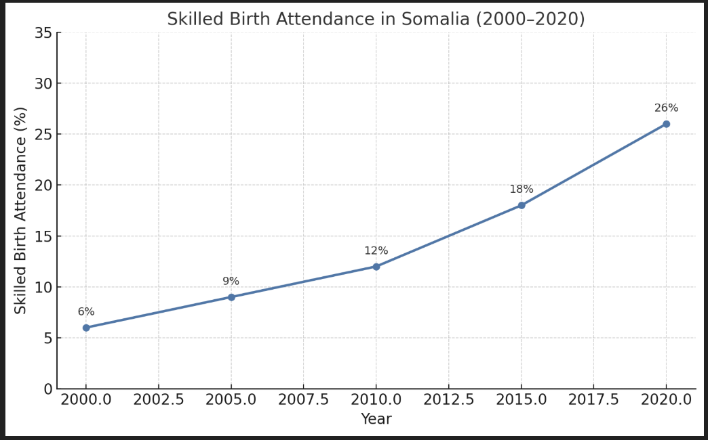
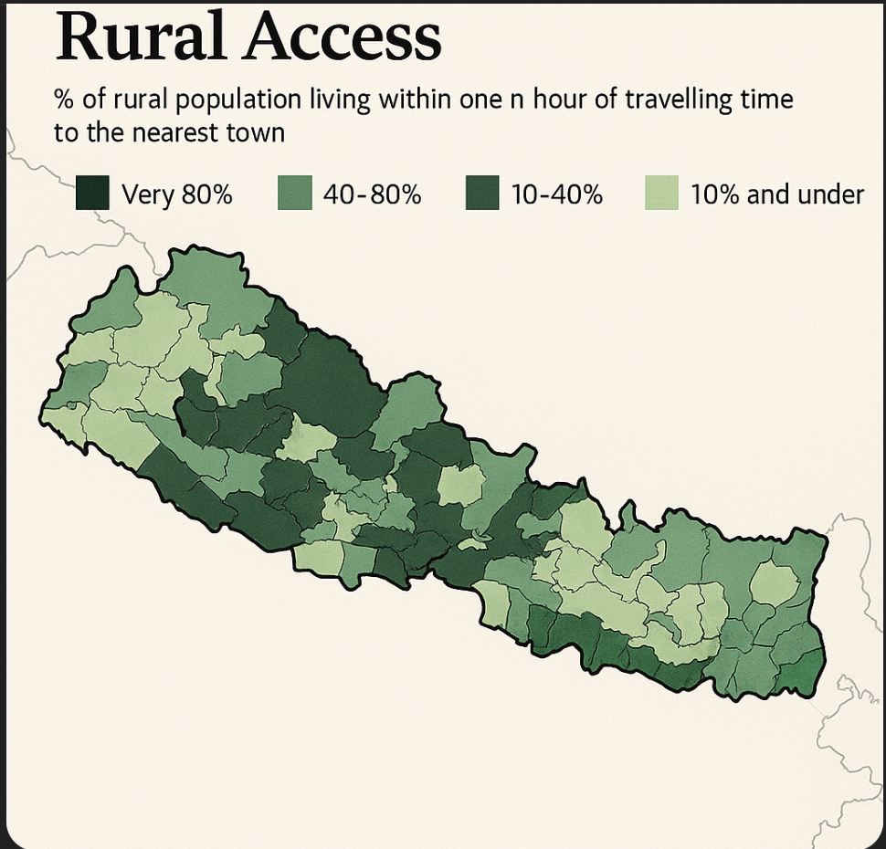
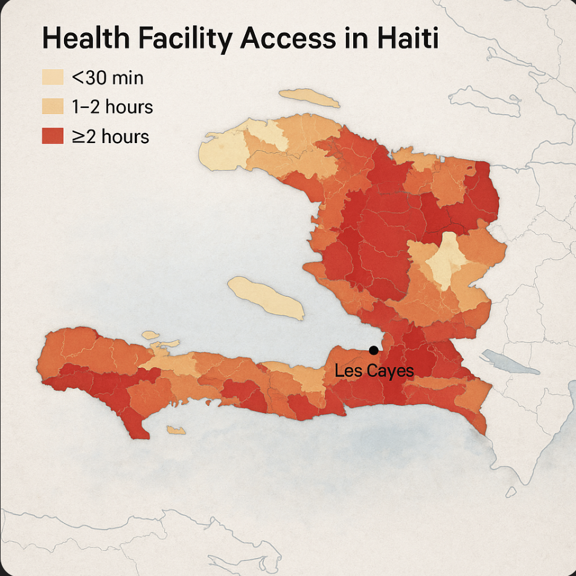
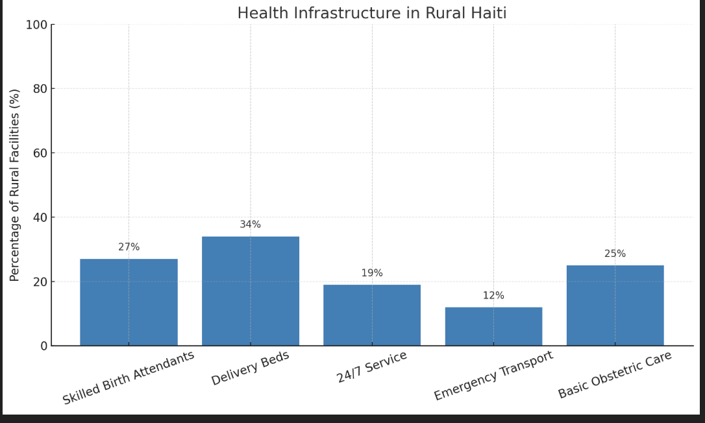
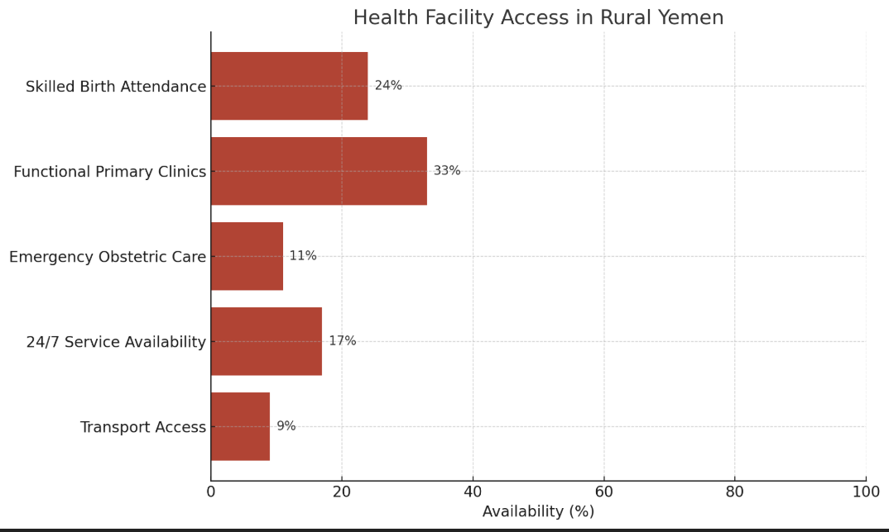
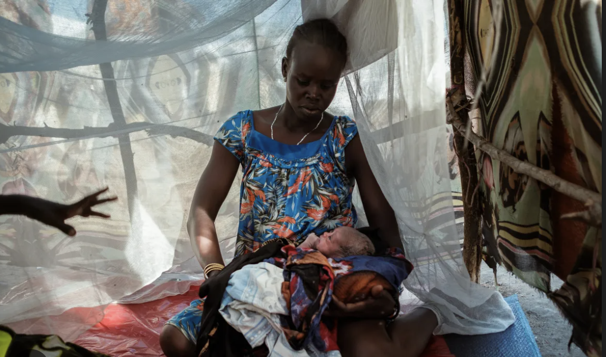
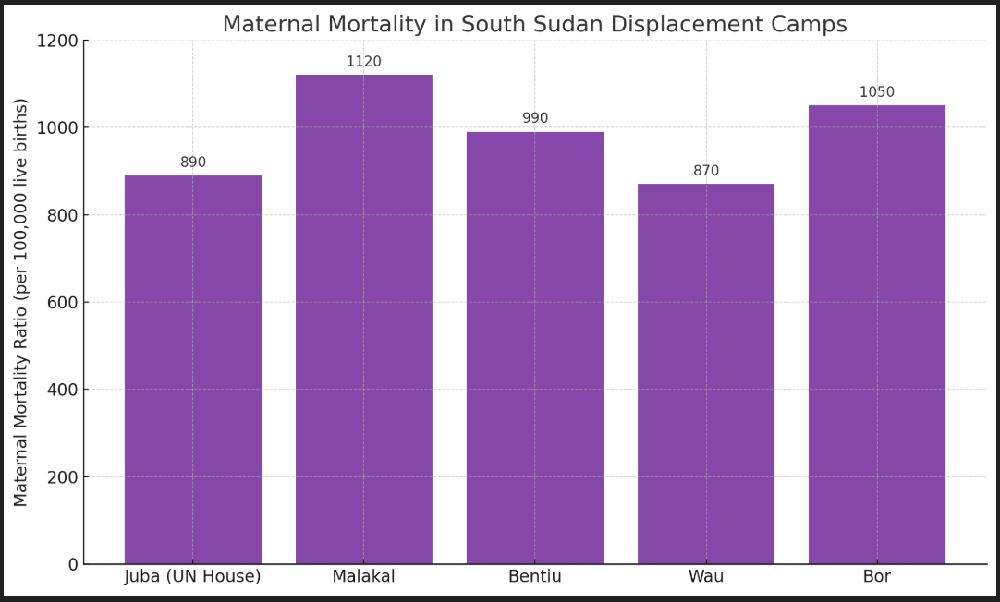

Stories Behind the Numbers
Real Lives, Real Loss: Stories of Mothers Lost to Poverty and Poor Access

Amina Yusuf
Lalita Devi
Josefa Morales
Zahra Al-Mansoori
Nyamal Deng

María Luz Ortega
Amina Yusuf
Somalia – Sub-Saharan Africa
Amina died after giving birth in a remote village with no skilled health workers nearby. The nearest clinic was over 40 kilometers away. Her family couldn’t afford transportation, and she died from postpartum hemorrhage hours later.Her children were left without care, and her husband quit work, pushing them into deeper poverty
- Only 9% of births attended by skilled personnel
- Transport access extremely limited
- High maternal mortality due to delays
What this shows: In rural Somalia, the poorest families (10th percentile) live around 5 km from the nearest clinic. But for the 90th percentile — those in the most remote areas — the distance is a staggering 70 km. These long distances make it nearly impossible to access skilled care during emergencies like childbirth.This is a key factor in stories like Amina Yusuf’s.
Lalita Devi
Nepal – South Asia
Lalita, a first-time mother from a remote mountainous village, Died from eclampsia due to untreated high blood pressure and malnutrition. Family couldn't afford prenatal care.Her daughter dropped out of school to care for younger siblings. For Lalita Devi, who lived in the remote western hills of Nepal, the above map reflects the deadly reality she and thousands of women face 
- Dark green areas (like where Lalita lived) mean very poor access — in some districts, less than 10% of rural people can reach a town within an hour.
- In these places, there are few roads, no ambulances, and walking is often the only option — even in medical emergencies.
- Lighter green areas (eastern Nepal) have better roads and transport, but they’re still exceptions.
What this shows For Lalita:
- Long distance to healthcare facility
- No prenatal care due to poverty
- Died from untreated complications
Josefa Morales
Haiti – Latin America & Caribbean
Josefa gave birth at home because the nearby clinic lacked staff. She died three days later from a postpartum infection that went untreated due to lack of access and money.Her youngest child became severely malnourished and had to be placed in an orphanage.
The image above shows how close (or far) people in Haiti live from a health facility. For women like Josefa Morales, this map isn’t abstract — it’s personal.
Red and dark orange zones show areas where travel time to a health center exceeds 1–2 hours, often on foot. Josefa lived in a rural commune outside Les Cayes, in one of these underserved zones.
When she went into labor, there was no clinic nearby, and the only vehicle in her village had broken down months earlier. Her husband tried carrying her down the hill toward the main road, but by the time they found a motorbike, Josefa had already lost too much blood.
This map tells a hidden truth: in Haiti, nearly 40% of rural residents live more than 5 km from the nearest health facility, often without reliable transpo 
Here's the bar chart showing the health infrastructure in rural Haiti — supporting Josefa Morales' story:
- Only 27% of rural facilities have skilled birth attendants.
- Just 12% offer emergency transport.
- Fewer than 1 in 5 operate 24/7.
This illustrates the deadly gaps Josefa faced in reaching lifesaving maternal care.
Zahra Al-Mansoori
Yemen – Middle East & North Africa
Zahra bled to death at home because the family couldn’t afford transportation to a hospital 80 km away. Her sister was forced into early marriage due to economic hardship.
This chart helps contextualize Zahra Al-Mansoori's story — where lack of timely care and emergency access led to her preventable death.
- Only 9% of rural areas have reliable Transport Access to health facilities.
- Just 11% have Emergency Obstetric Care, essential for saving mothers' lives.
- Only 24% of births are attended by skilled professionals.
- Only 17% of clinics operate 24/7.
These statistics reveal the severe breakdown in maternal health infrastructure that ultimately cost Zahra her life.
Nyamal Deng
South Sudan – Sub-Saharan Africa
Nyamal lived in a displacement camp with no skilled attendants. Malnourished and anemic, she died while giving birth under a tree shelter, far from medical help.Her death led to two of her children being separated and placed with different relatives
This chart shows the dangerously high maternal mortality risks for women living in South Sudan’s displacement camps — exactly the kind of conditions Nyamal Deng endured.
In camps where women often give birth without clean water, electricity, or antibiotics, maternal deaths are tragically common. These makeshift shelters lack trained staff, emergency transport, and infection control — all of which are essential for surviving childbirth complications like the sepsis that killed Nyamal.
Nyamal didn't die from an incurable condition. She died because the health system around her was broken. This chart illustrates how women in refugee settings face up to 10x higher mortality than those in stable regions.
Here is the bar chart titled "Maternal Mortality in South Sudan Displacement Camps". It shows alarming mortality rates across camps:
- Malakal: 1120 deaths per 100,000 live births
- Bor: 1050
- Bentiu: 990
- Juba (UN House): 890
- Wau: 870
These figures highlight the critical health gaps faced by women like Nyamal Deng — where giving birth in a camp meant risking your life due to lack of basic maternal care.
María Luz Ortega
Nicaragua – Latin America & Caribbean
María died from a ruptured uterus after multiple pregnancies with no access to family planning or emergency care. Her teenage son left school to become the sole earner.
"Fertility and Maternal Care Gaps in Nicaragua" — this chart highlights how regions like the North Atlantic, where María lived, face a deadly combination of high fertility rates and poor access to maternal care.
While the Pacific region averages
Note: All images shown are placeholders used for illustrative purposes only.These are free images from community taken from https://unsplash.com/about